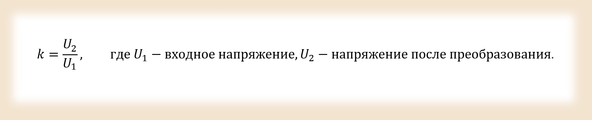
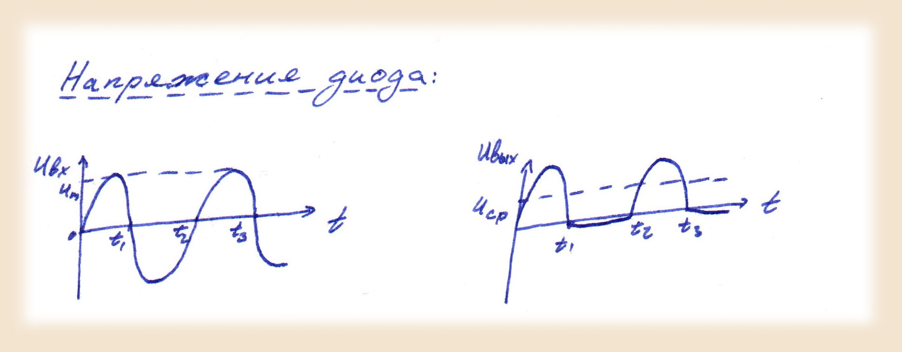
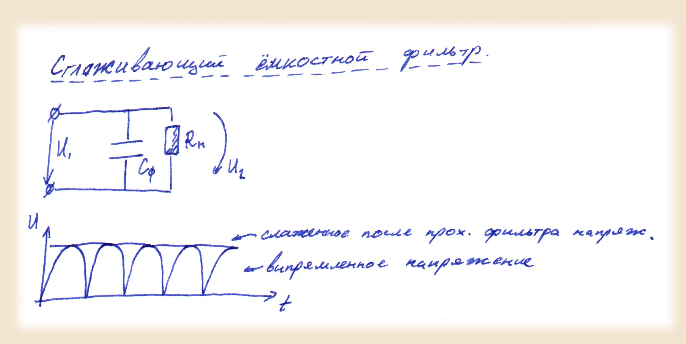
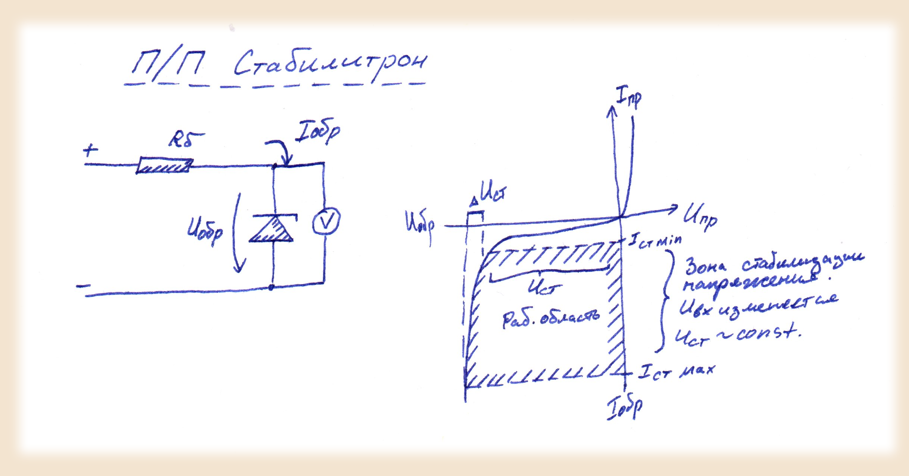

Постановка выполняемой задачи
-
В данной задаче нам необходимо:
- Исследовать схему однополупериодного выпрямления, построить и рассчитать ее характеристики. В схеме должны присутствовать:
- Источник первичного напряжения (сеть 220в,50гц)
- Трансформатор
- Выпрямительные диоды
- Cглаживающий С-фильтр
- Cтабилизатор на стабилитроне
- Нагрузка (12В, 40вт).
- Зафиксировать формы кривых напряжений на входе, после трансформации а также на нагрузке без фильрации и стабилизации, с фильтром и без стабилизатора, а также с обоими включенными.
Для выполнения данного задания опишем принципы работы элементов, составляющих схему:
Трансформатор – устройство, предназначенное для преобразования переменного электрического тока одного напряжения и определенной частоты в электрический ток другого напряжения и той же частоты. Характеризуется коэффициентом трансформации:
Выпрямительный диод - устройство пропускающее через себя ток только в одном направлении, благодаря чему преобразует переменное напржение таким образом, что оно изменяется в пределах одного знака:
Сглаживающий емкостной фильтр - конденсатор сравнительно большой емкости, использующийся для уменьешния амплитуды колебаний выпрямленного напржения:
Стабилизатор на стабилитроне - устройство, позволяющее получить на выходе напряжение, находящееся в заданных пределах при колебаниях входного напряжения. Для отвода лишней мощности требует дополнительный балластный резистор Rб:
